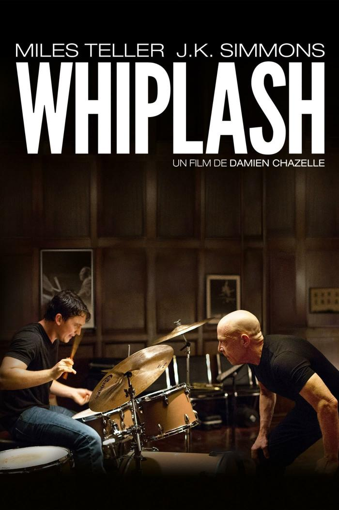
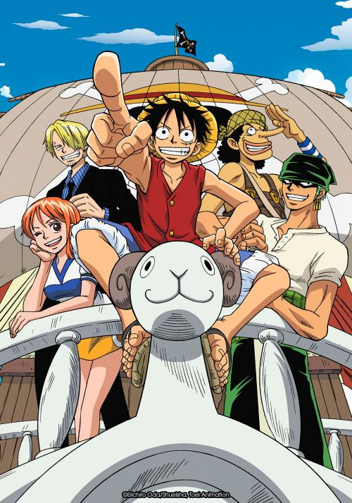
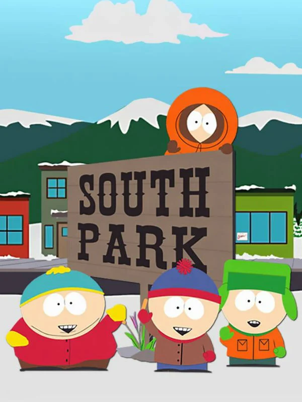
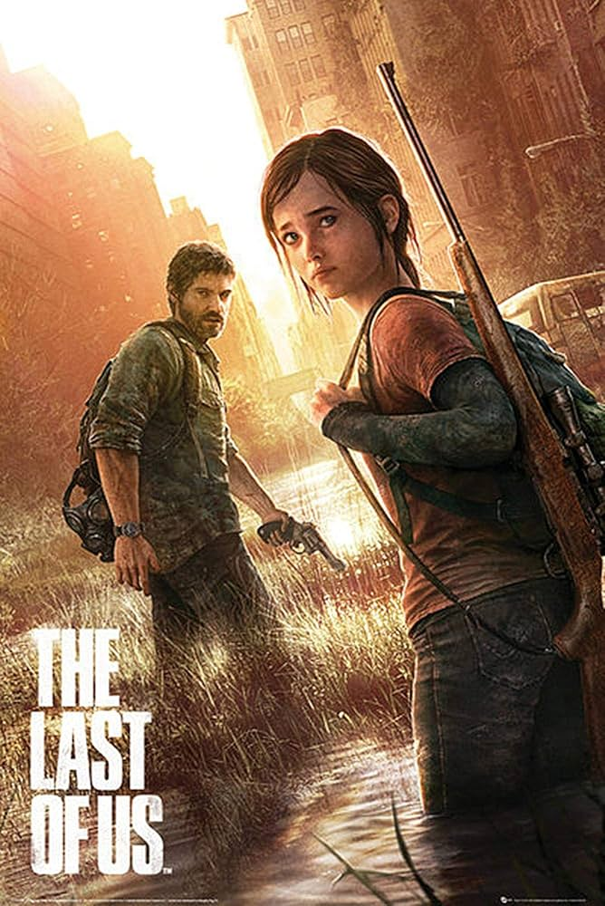
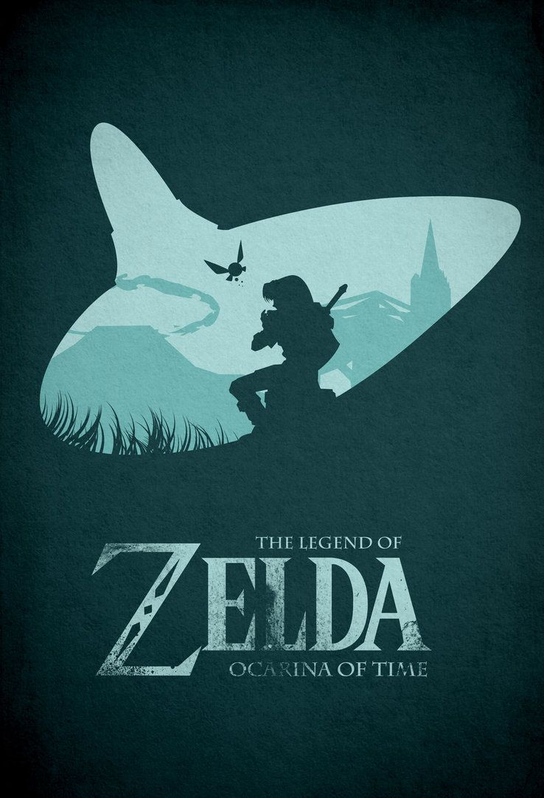
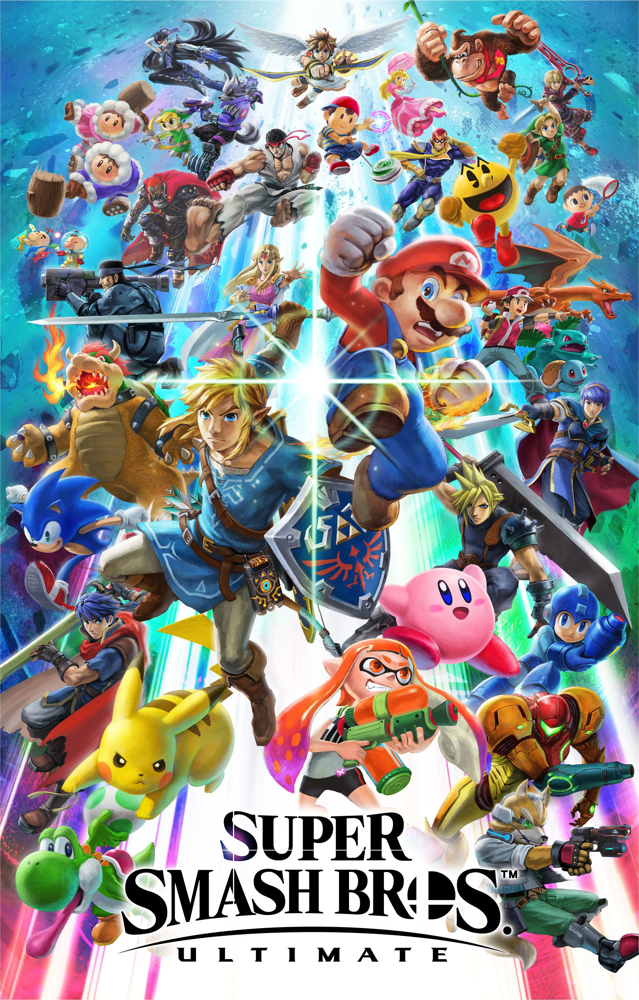

Mes Passions
Films
Les films sont l'un de mes loisirs, il m'arrive d'en regarder quand j'en ai le temps, même si cela n'est pas fréquent.


Dessins Animés
J'apprécie également regarder des dessins animés de tout type, ou en général l'histoire se permet plus de libertés que dans les films


Jeux Vidéo
J'aime aussi beaucoup jouer aux jeux vidéo, c'est une façon très facile de s'amuser tout en relevant des défis que ce soit tout seul ou avec des amis.



Musique
Enfin, La musique est l'une des choses que j'écoute le plus au quotidien, j'écoute différentes choses en fonction de l'instant et elle me permet de voyager au quotidien.